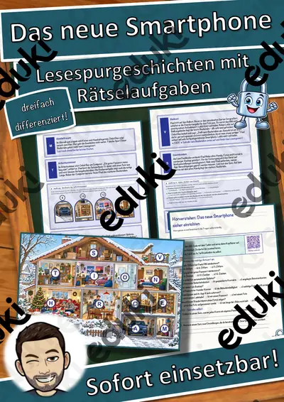
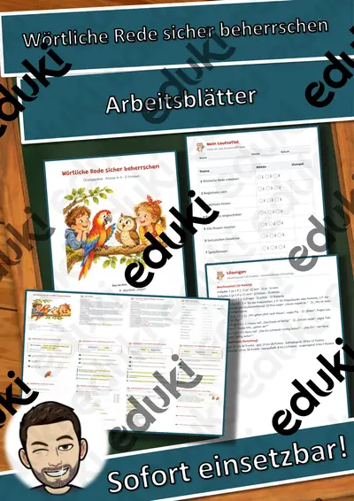
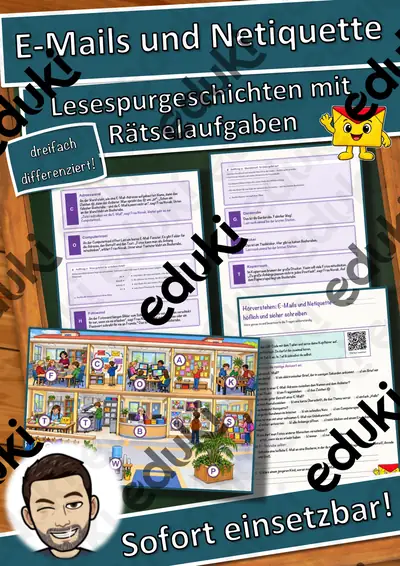

Lesespur: Bohren an der Ständerbohrmaschine: sicher und genau – Lesespurgeschichte mit Rätseln (Klasse 7)
Bohren an der Ständerbohrmaschine – sicher und genau – Lesespurgeschichte Technik (Klasse 7)Schick deine Klasse auf eine Lesespur! Ein Rundgang durch die Technikwerkstatt: Lukas und Amira aus der 7b bauen einen Stifthalter aus Holz – Techniklehrer Herr Wagner zeigt, wie man sicher und genau bohrt, Maskottchen ist der Spiralbohrer Spiro. Von der Werkstatttür über Brillenregal, Holzlager, Anreißtisch, Werkzeugwand, Ständerbohrmaschine, Ladestation und Besenschrank bis zur Vitrine führt der Weg. Am Ende jedes Abschnitts verrät ein Hinweis den nächsten Ort auf dem Plan – nur wer genau liest, findet den Weg und sammelt alle geheimen Buchstaben zum Lösungswort.
Die passende Lesespur für Technik in Klasse 7 (auch 8) an der Mittelschule – für Stationenlernen, Freiarbeit oder Vertretungsstunden im Technikunterricht. Ohne Marken. Geeignet für Mittelschule, Realschule, Gymnasium und Gesamtschule. Das Material ist SOFORT EINSETZBAR und in DREI DIFFERENZIERUNGSSTUFEN (leicht ★ / mittel ★★ / schwer ★★★) angelegt.WICHTIG: Das komplette Material ist sowohl in FARBE als auch in SCHWARZ-WEISS enthalten – ideal zum Sparen von Druckkosten.DAS IST ENTHALTEN
- Lesespurgeschichte in 3 Niveaus (leicht, mittel, schwer)
- farbiger Plan der Technikwerkstatt als Suchkarte
- Hörverstehen mit QR-Code zur MP3 (selbstständiges Hören mit Kopfhörern)
- vier Aufträge auf dem Weg: eine Zuordnung, eine Rechenaufgabe am Holzlager, ein Quiz und ein Steckbrief
- Rätselseite (Wörter-Suchsel + Rätselfragen rund ums Bohren)
- Ausmalbild zum Thema
- ausführliches Lösungsblatt für die Lehrkraft mit allen Lösungen (Lesespur, Aufträge, Hörverstehen, Rätselseite)
- alles zusätzlich als komplette Schwarz-Weiß-VarianteSO GEHT DIE LESESPURDie Schülerinnen und Schüler lesen ab START, finden im Text den nächsten Ort, suchen ihn auf dem Plan und lesen bei dieser Station weiter. An jeder richtigen Station gibt es einen Buchstaben. Eingeplante Sackgassen (Waschbecken, Lehrerpult, Fensterbank, Verbandskasten) sind keine Stationen und dienen der Selbstkontrolle. Am Ende werden die gesammelten Buchstaben umgestellt und ergeben ein geheimes Lösungswort. (Die Lösungen sind selbstverständlich nur im Lösungsblatt für die Lehrkraft enthalten.)INHALTLICHER SCHWERPUNKTSchutzausrüstung und Kleidung, warum keine Handschuhe an der Bohrmaschine, Anreißen und Vorstechen, Bohrerarten, Bedienelemente der Ständerbohrmaschine, Drehzahl und Tiefenanschlag, Werkstück spannen, Akkuschrauber sowie der vollständige Bohrvorgang von der Vorbereitung bis zum Abschluss.ABGEDECKTER LEHRPLAN (Klasse 7)
- LehrplanPLUS Mittelschule Technik 7, LB 2 Konstruktion und Produktion: Bohren – Bedienelemente, vollständiger Bohrvorgang (Vorbereitung, Durchführung, Abschluss); Sicherheits- und Gesundheitsbestimmungen, Arbeitsplatzorganisation.
- Mathematik – Malnehmen und Subtrahieren.
- Deutsch – Sachtexte sinnentnehmend lesen; einem Hörtext gezielt Informationen entnehmen (Hörverstehen mit MP3).Geeignet für Freiarbeit, Stationenlernen, Vertretungsstunden, Wochenplan und als Einstieg ins Thema.
Ähnliche Materialien

Sicher am PC arbeiten – Arbeitsheft mit Lösungen (IT 6/7, Realschule Bayern)

Lesespur: Das neue Smartphone: sicher einrichten – Lesespurgeschichte mit Rätseln (Klasse 7)

Wörtliche Rede sicher beherrschen

Lesespur: Rettungsschwimmen: sicher im Wasser helfen – Lesespurgeschichte mit Rätseln (Klasse 9)

Lesespur: Sicher unterwegs im Verkehr – Lesespurgeschichte mit Rätseln (Klasse 5)

Lesespur: Sicher schneiden: Krallengriff, Brückengriff und eine Gemüsesuppe – Lesespurgeschichte mit Rätseln (Klasse 5)

Lesespur: E-Mails und Netiquette: höflich und sicher schreiben – Lesespurgeschichte mit Rätseln (Klasse 5)